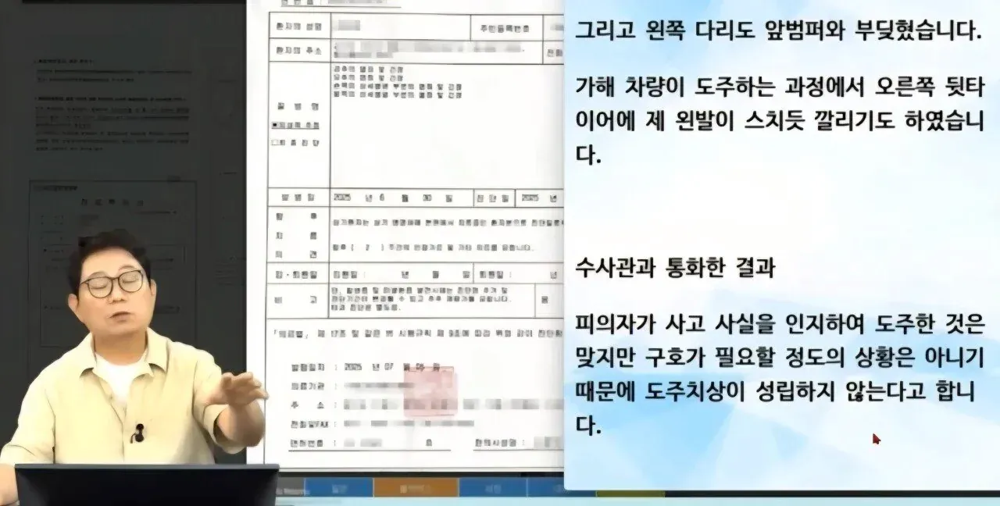
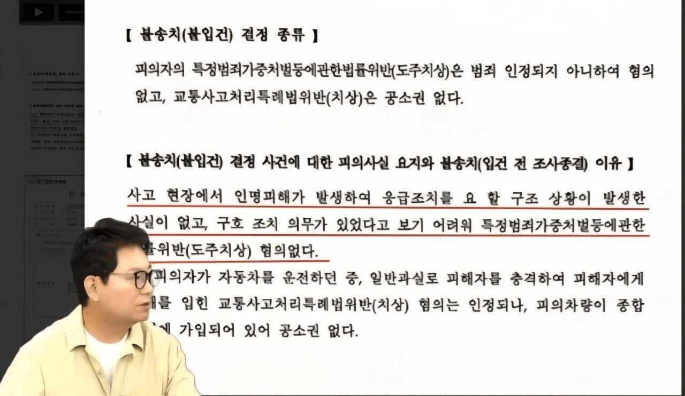
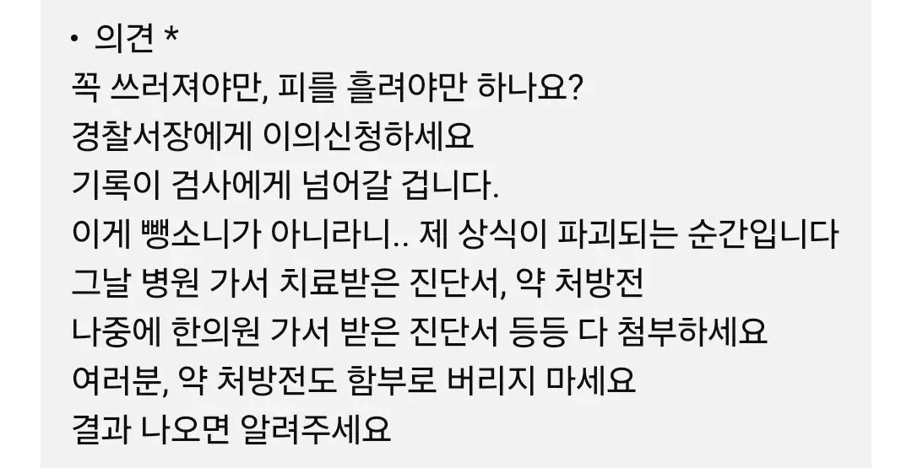

뺑소니 해주면 뒤지나봐 안 그럼 저럴리가 없지
사이드에 팔꿈치만 닿은후 차량 도주했다가 뺑소니 판결받은거 있었을건데? 아닌가?
경찰 요즘 이미지 최악이네
저거 좀 된 사건이긴함
전부터 스택 쌓던거 요새 터지나 싶음
검사에게 넘어가면 뭐.. 이제는 달라지는거 없지?
경찰 개새끼들 아주 일하기 싫지???
경찰들은 피해자가 법 잘 모른다 싶음 알려주려고 하는 게 아니라 자기가 안 귀찮아지려는 방향으로 가려고 하더라
무슨 일 하세요? 법 잘 아세요? => 내가 실제로 경찰한테 들은 말.
와 경찰 수사 너무 잘한다 ㅅㅂ
저거 도로교통법 적용안되는거 다 알고 뭉개는거임
마 1mm만 톡 쳐도 뺑소니여
교통사고 전문 변호사가 개탄하는데 판례가 어쩌고 하는 애들은 증말 ㅋㅋㅋㅋㅋ
한문철권위는 앞세우는데 대법원 판례는 무시하는건 좀 아니지않음?ㅋㅋㅋ
판례는 글로만 나온거라 당시 사고가 어떤건지 알수가 없어.
글로는 같은 사고 같아도 블랙박스나 cctv를 보면 다른 사고인 경우도 흔하고.
예를 들어
도로에서 보행자를 차로 충격했다 라는 사고에서
그 보행자가 빨간불에 뛰어든건지, 횡단보도도 없는 곳에서 무단횡단인지, 정상적인 초록불 횡단보도를 걷는데 차가 친건지
다양하듯이.
상황에 따라 판례는 바뀌지.
그래서 한문철꺼 종종 보다보면 판례랍시고 누가 들이대는거 블박 보여주며 반박도 함.
무시하는건 아니였던거 이해했는데 경찰이 저 판례로 판단 잘못내린건지 아닌지는 결국 법정싸움 가야되는거 아님?
판례앞에 변호사 따위가? ㅌㅋㅋㅋㅋㅋ
순환보직이라 쟤네들도 조또 모름. 어차피 몇년 있다가 다른 분야로 발령나기 때문에.
걍 당장 니가 교통 경찰보다 도로교통법 더 잘 알수도 있음.
경찰은 전문가가 아님. 그냥 행정처리 서비스 해주는 사람들이지.
우리나라에서 수사 아니면 그 분야 전문가이기 쉽지 않음.
2222 사람들이 공공에 바라는 행정서비스 질이 너무 높음.
변호사급으로 그 분야 정통하면 경찰 왜 함 변호사하지...
그런 서비스를 바라시면 공무원 월급과 복지를 대기업급으로 주고, 대기업식 경쟁 시스템 도입하면 대기업급 인재들이 빠릿하게 처리해줄거임 ㅋㅋ
초봉 달에 꼴랑 200 주고
초과근무하면 시급 1.5배 받은 근로자 대비
시간 당 만이천원 남짓 받는데
누가 열과 성을 다해 응대해줘서 내 퇴근시간 늦추냐?
그렇군.. 경찰 신고할땐 꼭 이게 법적으로 걸 수 있는건지 변호사를 데리고 가야겠구나..
민생은 나날이 안정되고있어요
내려서 사과도 없이 상태보고 지갈길 가는게 아주 인성이 쉬발련이네 얼굴이 보이지않는데도 단 한번이라도 마주치기 싫다 걍 소름이다
매번댓글쓰지만 개좆찰만큼 일을 안하려고 노력하는새끼들은 없음
진짜 당해보면 본문같은일이 간혹 몇몇이 저러는게
아니란걸 느끼게된다 민중의 지팡이라하는데
지팡이로 개패고싶어짐
민중의 곰팡이
검찰 가만히 냅둬라 빡대가리 견찰놈들 에휴
에듀윌에서 똑바로 안가르치나
댓글보면 경찰인지 아님가족인지 경찰편들기 위해 노력하시는 분들이 보임
저정도면 음주나 무면허등이라 도망간 것 아닌가
인천공항 지하주차장 조심해라 무빙워크 나올때 진짜 치일뻔했음 각져서 서로 안보임
견찰들 어휴
진짜 경찰 뭐하는 새끼들이냐?
지새끼 일하기 싫어서 조사 안한거지 견찰새끼
짭새 새끼들 하는 꼬라지 보면 이새끼들 가족이 꼭 억울한 피해자가 되어서 뒤졌으면 좋겠다 라는 생각이 듦
나도 공무원인데 법률관련은 공무원 못믿는다. 개개인에 대한 불신이 아니고 돌아가는 꼬라지 보면 그럴수밖에없음 월급 200에 순환보직에 고졸수준 업무 능력 가진 사람들 앉혀놓고 변호사 수준 바라는거 자체가 넌센스임 지금 저 변호사도 전문가니까 저렇게 다아는거고 일반적인 공무원은 저렇게까지 알기 현실적으로 어렵다봄. 근데 갠적으론 더 수준 낮아질거같긴함 머리좋고 책임감있는 사람들은 나가려는게 공직이니
뭔 병신짓을 했길래 형사고발이나 당하는지 ㅉㅉ ㄹㅇ 알만함 ㅋㅋㅋ